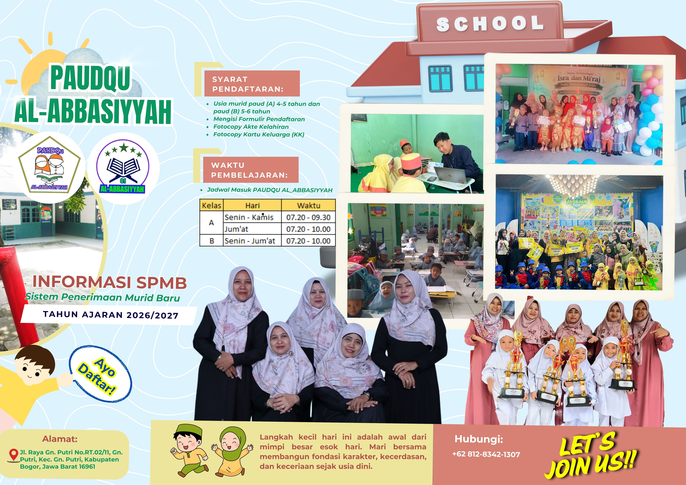
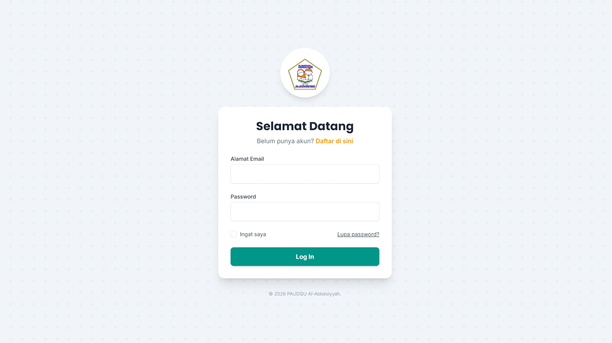

Al-Abbasiyyah PAUDQU Academic Information System

About the Project
SIAPA (Al-Abbasiyyah PAUDQU Academic Information System) is an integrated web platform designed to modernize school administration and communication. The system includes new student enrollment (PPDB), instant payment verification by administrators, a dedicated portal for parents, as well as a photo-based daily activity log for children and automatic PDF form printing.
Context & Problem Statement
PAUDQU Al-Abbasiyyah previously relied on manual, paper-based administration for new student enrollment (PPDB), tuition payment tracking, and daily activity logging. This traditional workflow caused administrative bottlenecks, risk of lost documents, and delayed communication between teachers and parents. To overcome these operational challenges, SIAPA (Sistem Informasi Akademik PAUDQU Al-Abbasiyyah) was created as a centralized web platform designed to digitize school management, streamline payment verification, and enhance parent-teacher collaboration.
Key Challenges & User Needs
Based on user interviews and system analysis at PAUDQU Al-Abbasiyyah using the Waterfall methodology, three core user requirements were identified:
-
Seamless Registration & Payment: Parents need an intuitive online PPDB portal to submit student data and upload payment proof without having to visit the school physically.
-
Real-time Student Activity Journal: Teachers require a simple dashboard to post daily learning logs, attach activity photos, and provide individual behavioral notes for parents to view.
-
Automated Official Documents: The system needs an automated mechanism to generate downloadable PDF enrollment forms instantly once an administrator verifies the payment.
The Solution & Development
As the sole developer and designer, I engineered SIAPA from conceptual UI/UX design to fullstack deployment using the Laravel framework. The user interface features an approachable, child-friendly aesthetic utilizing bright accent colors (emerald green and vibrant orange) tailored for an early childhood education institution. I structured the system around three distinct role-based access portals (Admin, Teacher, and Parent) to ensure strict data security, responsive mobile accessibility, and clear administrative workflows.
Live Website Preview
Try exploring the SIAPA website's interface and main navigation flow interactively below:
Design Gallery
Admin Dashboard UI

Teacher Dashboard UI

Parent Dashboard UI

SPMB Promotional Poster and Brochure Design

Login UI
